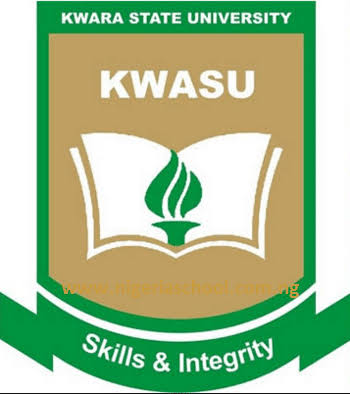

What is Computer Science?
Generally speaking, computer science is the study of computer technology, both hardware and software. However, computer science is a diverse field; the required skills are both applicable and in-demand across practically every industry in today's technology-dependent world. As such, the field of computer science is divided amongst a range of sub-disciplines, most of which are full-fledged specialized disciplines in and of themselves. The field of computer science spans several core areas: computer theory, hardware systems, software systems, and scientific computing. Students will choose credits from amongst these sub-disciplines with varying levels of specialization depending on the desired application of the computer science degree. Though most strict specialization occurs at the graduate level, knowing exactly what computer science is (and where a student's interests fall within this vast field) is of paramount importance to knowing how to study computer science.
There are three major programs offered in Computer Science, namely:
REGULAR
The Computer Science degree course at the Kwara State University explores how technology is revolutionizing the world. The full-time degree programme looks into computer architecture, and how its different components are intertwined. Particularly, the degree programme is a comprehensive study of the scope of application of computer science in the modern scientific and technological contexts. Computer Science seeks to help students develop the knowledge of computer operations, and it could be enhance efficiency.PDP
All degree Programmes are for duration of four years of eleven semesters for students admitted into 100 Level, and three years of eight semesters for students admitted through Direct Entry into 200 Level. Each year is made up of Harmattan Semester (October-January), Rain Semester (February-May) and Summer Semester (June-September).IDEL
The Vice-Chancellor, Kwara State University (KWASU), Malete, Prof. AbdulRasheed Na'Allah, inaugurated the Board for the Institute of Distance and E-learning (IDEL) on Thursday, May 26, 2016. The Board is to coordinate Distance Learning Programmes and Centres, E-Learning Programmes, Affiliated Programmes. The operational units of the Institute are Distance Learning Unit, E-learning Unit, Affiliated Programmes Unit, and Courseware Production and Quality Control Unit.